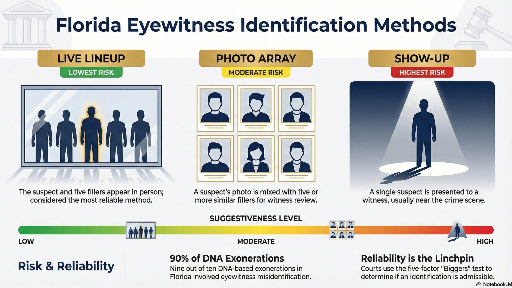

Lineups, Photo Arrays, and Show-Ups: Understanding Florida Eyewitness Identification

A witness points at you and says, "That's him." In a criminal trial, few moments are more powerful - or more dangerous. Eyewitness identification is one of the leading causes of wrongful convictions, yet juries find it incredibly persuasive.
Florida uses three types of eyewitness identification procedures: live lineups, photo arrays, and show-ups. Each has different procedures, different risks of suggestiveness, and different legal implications. Understanding how these work - and when they can be challenged - is critical to mounting an effective defense.
Why This Matters
According to the Innocence Project of Florida, 9 out of 10 DNA-based exonerations in Florida involved eyewitness misidentification. That's why Florida enacted F.S. 92.70, the Eyewitness Identification Reform Act, in 2017 - to reduce wrongful convictions caused by unreliable identifications.
The Three Types of Eyewitness Identification
| Type | What It Is | Suggestiveness | When Used |
|---|---|---|---|
| Live Lineup | Suspect + 5+ fillers stand in person | Lowest (if done correctly) | Serious felonies, post-arrest |
| Photo Array | Suspect's photo + 5+ filler photos | Moderate | Most common; pre-arrest investigation |
| Show-Up | Single suspect shown to witness | Highest (inherently suggestive) | Near scene, shortly after crime |
1. Live Lineups: The Gold Standard
A live lineup (also called an "in-person lineup" or "physical lineup") is when the suspect and several similar-looking individuals (called "fillers") stand together while a witness views them. When done correctly, this is considered the most reliable form of identification because the witness must pick from multiple options rather than simply confirming a single suspect.
Florida Requirements (F.S. 92.70)
Under Florida's Eyewitness Identification Reform Act, live lineups must follow specific procedures:
Live Lineup Requirements
- Independent Administrator: The lineup must be conducted by someone who doesn't know which person is the suspect. This prevents unconscious cues.
- Similar Fillers: The non-suspects must reasonably match the witness's description of the perpetrator.
- Written Instructions: The witness must be told the perpetrator "might or might not be in the lineup" and that the investigation will continue regardless of whether they make an identification.
- No Feedback: After the identification, the administrator cannot tell the witness whether they picked the "right" person.
- Documentation: The entire procedure should be recorded.
Defense Considerations
Even with these protections, live lineups can be challenged when:
- The suspect stands out from the fillers (different height, clothing, complexion)
- The administrator knew which person was the suspect
- Instructions weren't given or weren't followed
- The witness received feedback before documenting their certainty level
2. Photo Arrays: The Most Common Procedure
A photo array (or "photo lineup") is when police show a witness a set of photographs - typically the suspect's photo mixed with five or more photos of similar-looking individuals. This is the most common identification procedure because it's logistically simpler than gathering people for a live lineup.
Sequential vs. Simultaneous Presentation
Research has shown that how photos are shown matters as much as what's in them:
Two Methods of Photo Presentation
- Simultaneous: All photos shown at once. The witness compares faces and picks the one that looks "most like" the perpetrator - even if none is actually a match. This can lead to false identifications.
- Sequential: Photos shown one at a time. The witness must decide yes or no on each photo before seeing the next. Research suggests this reduces false identifications.
Florida Requirements (F.S. 92.70)
Photo arrays must be administered using "neutral administration" methods that prevent the administrator from knowing which photo is being viewed. Acceptable methods include:
- Automated computer programs that display photos randomly
- Photos placed in randomly numbered folders and shuffled
- Any other procedure that prevents the administrator from tracking which photo the witness sees
The witness must also sign a written acknowledgment that they received the required instructions.
Defense Considerations
Photo arrays are vulnerable to challenge when:
- The suspect's photo stands out (different background, lighting, or photo quality)
- Fillers don't match the witness's original description
- The administrator knew which photo was the suspect
- The witness wasn't properly instructed
- Multiple viewings of the same array occurred
3. Show-Up Identifications: Inherently Suggestive
A show-up is when police present a single suspect to a witness for identification - usually near the crime scene, shortly after the offense. The witness sees one person and is asked, "Is this the person?"
Why Show-Ups Are Problematic
Unlike a lineup where the witness must pick one person from several similar-looking people, a show-up presents only the suspect. The implicit message: "We caught someone. Is this them?" This inherently suggests the person is guilty.
When Show-Ups Are Permitted
Under F.S. 92.70, show-ups may be conducted when:
- A potential suspect is located and detained within a reasonable length of time
- The suspect is in proximity to the location of the crime
- The suspect fits the specific description given by the witness
Courts have also recognized show-ups as appropriate when the witness is injured and may not be available later, or when evidence may be lost if identification is delayed.
Show-Up Requirements
- Only one witness at a time may view the suspect
- Multiple witnesses must be kept separate and cannot discuss the show-up with each other
- The suspect should not be shown in handcuffs or police custody if avoidable
Defense Considerations
Show-ups are the most challengeable form of identification. Arguments include:
- The procedure was unnecessarily suggestive - police could have used a photo array instead
- The suspect was displayed in handcuffs or police custody
- Too much time had passed since the crime (no longer "near the scene")
- Multiple witnesses viewed the suspect together or communicated before viewing
The Legal Standard: Biggers Factors
Regardless of which identification procedure is used, courts evaluate reliability using the five-factor test from Neil v. Biggers, 409 U.S. 188 (1972). Even if the procedure was suggestive, the identification may still be admitted if it passes this reliability test.
The Biggers Five-Factor Reliability Test
- Opportunity to View: How long and clearly did the witness see the perpetrator during the crime?
- Degree of Attention: Was the witness focused on the perpetrator, or distracted by the crime itself?
- Accuracy of Prior Description: How detailed and accurate was the witness's initial description to police?
- Level of Certainty: How confident was the witness at the time of identification?
- Time Elapsed: How much time passed between the crime and the identification?
Manson v. Brathwaite, 432 U.S. 98 (1977), clarified that "reliability is the linchpin" of admissibility. The question isn't just whether the procedure was suggestive - it's whether the identification is reliable under the totality of circumstances.
When Show-Ups Cross the Line: Foster v. California
Foster v. California, 394 U.S. 440 (1969), demonstrates how repeated or staged identifications violate due process.
Foster was subjected to THREE identification procedures:
- First lineup: Foster was placed with two men significantly shorter than him
- Second confrontation: After the witness couldn't identify anyone, police arranged a one-on-one show-up
- Third lineup: Foster was the only person who appeared in all three procedures
The Supreme Court reversed the conviction, holding that these "suggestive elements made it all but inevitable that [the witness] would identify petitioner whether or not he was in fact 'the man.'"
Defense Strategy
Foster is your go-to case when police conduct repeated identifications or when the suspect appeared in multiple procedures. If your client was shown to a witness more than once, cite Foster and argue the process was unconstitutionally suggestive.
Florida's Application: Grant v. State
In Grant v. State, 390 So. 2d 341 (Fla. 1980), Florida's Supreme Court applied the Biggers factors to a courtroom identification.
Grant was seated at counsel table when the victim identified him. The court found the procedure suggestive but ultimately not unconstitutional because the Biggers factors showed reliability - the victim had ample opportunity to observe Grant during the robbery, gave a detailed description, and was certain in the identification.
The takeaway: Florida follows the federal Biggers-Manson standard. Suggestive procedures are disfavored but not automatically unconstitutional. The analysis turns on the totality of circumstances.
Remedies for Non-Compliance (F.S. 92.70)
Florida's Eyewitness Identification Reform Act provides specific remedies when police don't follow the rules:
What Happens When Police Don't Comply
- Suppression Hearings: Non-compliance is a factor the court must consider when ruling on motions to suppress the identification
- Misidentification Claims: Evidence of non-compliance is admissible to support a claim of eyewitness misidentification at trial
- Jury Instructions: If compliance or non-compliance is presented at trial, the jury must be instructed to consider it when evaluating reliability
This means even if the identification isn't suppressed, the defense can still attack its reliability in front of the jury.
How to Challenge an Identification
Motion to Suppress
Your motion should address:
- Was the procedure suggestive? (Single-person show-up, suspect stands out, administrator knew suspect's identity)
- Was it unnecessarily suggestive? (Could police have used a less suggestive method? Was there time for a photo array?)
- Biggers factors: Even if suggestive, was the ID reliable under the totality of circumstances?
- F.S. 92.70 compliance: Did police follow Florida's statutory requirements?
Key Cases to Cite
- Foster v. California, 394 U.S. 440 (1969) - Repeated suggestive confrontations violate due process
- Neil v. Biggers, 409 U.S. 188 (1972) - Five-factor reliability test
- Manson v. Brathwaite, 432 U.S. 98 (1977) - Reliability is the linchpin
- Grant v. State, 390 So. 2d 341 (Fla. 1980) - Florida applies Biggers factors
Real-World Example
Challenging a Show-Up Identification
Facts: Robbery at 2 AM. Witness gives vague description: "Black male, medium height, dark clothing." Police stop your client three blocks away 15 minutes later and drive the witness to the scene. Your client is in handcuffs in the back of a patrol car when the witness identifies him.
Defense Strategy:
- Argue Foster - single-person show-up in handcuffs is inherently suggestive
- Attack Biggers factors: vague initial description, poor lighting (2 AM), brief viewing during robbery
- Argue unnecessarily suggestive - police had time to conduct a photo array instead
- Argue F.S. 92.70 non-compliance - no written instructions, suspect displayed in custody
The Bottom Line
Eyewitness identification is powerful evidence - and that's exactly why Florida law requires specific procedures to ensure reliability. The three types of identification carry different levels of inherent suggestiveness:
- Live lineups - Most reliable when properly conducted with independent administrator and similar fillers
- Photo arrays - Moderate risk; must use neutral administration to prevent bias
- Show-ups - Inherently suggestive; courts scrutinize these closely and require exigent circumstances
When police don't follow the rules, or when the circumstances undermine reliability, these identifications can and should be challenged.
Were You Identified in a Lineup, Photo Array, or Show-Up?
If eyewitness identification is part of your case, the procedures used matter. An experienced defense attorney can analyze whether police followed Florida's requirements and whether the identification is reliable enough to be admitted at trial.
Contact Lotter Law at 407-500-7000 for a free consultation. As a former state trooper and deputy sheriff, I know how these procedures are supposed to work - and when they fall short.
Legal Reference
Florida Statute
- F.S. 92.70 - Eyewitness Identification Reform Act (2017)
U.S. Supreme Court Cases
- Foster v. California, 394 U.S. 440 (1969) - Repeated suggestive confrontations violate due process
- Neil v. Biggers, 409 U.S. 188 (1972) - Five-factor reliability test for eyewitness identification
- Manson v. Brathwaite, 432 U.S. 98 (1977) - Reliability is the linchpin of admissibility
Florida Cases
- Grant v. State, 390 So. 2d 341 (Fla. 1980) - Florida Supreme Court applies Biggers factors

Jeff Lotter
Criminal Defense Attorney | Former State Trooper
Jeff Lotter is an Orlando criminal defense attorney and former Florida Highway Patrol trooper. He uses his law enforcement experience to identify weaknesses in the State's case and build winning defense strategies.
Related Articles
Motion to Suppress: What to Expect
How suppression hearings work and what they can accomplish.
The Mangione Backpack Search Case
What police can search when they arrest you.
Corpus Delicti: Authority vs Evidence
When the State must prove a crime occurred independent of your statements.
Florida Privacy Rights Beyond Miranda
Constitutional protections that go further than you think.